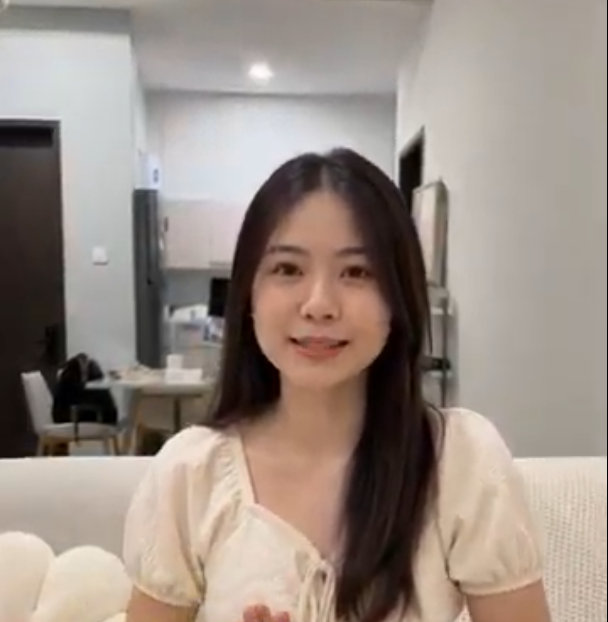
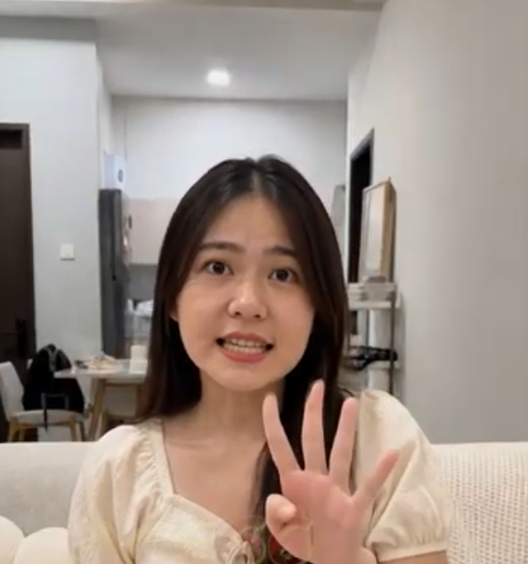

幸福生活的微小仪式：敏仪分享打造温馨日常的4个秘诀

家的温馨往往源自那些被我们用心雕琢的日常细节。当我们将目光收回，专注体味身边的每一分美好，生活便会回馈我们无尽的平静与满足。
在一个惬意的午后，敏仪坐在家中舒适的沙发上。柔和的灯光映照着她温和的笑容，整间屋子弥漫着宁静的气息。她经常与身边朋友分享如何在这个小天地里找到属于自己的生活节奏与正能量。
1. 拥抱当下：在居家时光中滋养身心
学会享受独处的宁静，并为每天的生活注入正念，是保持内心丰盈的关键：
营造舒适空间： 将客厅整理得洁净有序，打造一个随时能放松身心的避风港。
保持温和心态： 以包容与理解对待日常繁琐，让内心时刻保持从容平静。
珍惜平凡瞬间： 不论是一杯暖茶还是一缕阳光，都值得用心品味与感恩。

2. 幸福的4个小妙招：简单易行的人生加分项
谈到如何保持充沛的积极能量，敏仪兴致勃勃地举起手指，总结了自己多年来坚持的4个生活小习惯：
1. 晨间正念深呼吸： 清晨醒来后先深呼吸数次，带着感恩迎接新的一天。
2. 保持环境整洁： 每天花几分钟整理小物件，空间明亮了，心情自然舒畅。
3. 培养一项小爱好： 无论是阅读、花艺还是烹饪，给生活留一点纯粹的快乐时光。
4. 记录感恩时刻： 睡前记下今天发生的几件开心事，带着满满的幸福感入睡。
“幸福从不需要惊天动地，它隐藏在每一个用心生活的微小习惯里。”
看到敏仪满脸洋溢的自信与喜悦，大家也深受鼓舞。原来只需小小的改变，就能让日常生活焕发闪耀的光彩。
总结
生活是一场温柔的旅程，只要我们怀揣对美好的向往，用心呵护每一个日常瞬间，幸福就会如影随形。希望每个人都能找到属于自己的美好节奏，收获满满的正能量。
今天不妨也给自己一个微笑，试着去开启这4个温馨的生活小习惯吧！
本文为传递居家生活美学、正念习惯与积极生活态度而创作的正能量故事，仅供阅读与交流使用。